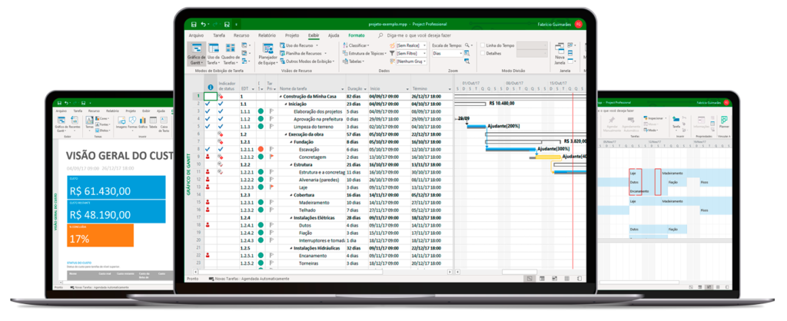

| |
microsoft project |
|  | O MS Project é o que permite ao responsável pelo planejamento, execução ou controle de uma série de atividades que se relacionam, trabalhar alinhado à utilização de recursos, custos, cronograma e as principais áreas do gerenciamento de projetos |
| Com o MS Project, o gestor de projeto pode criar e modificar o conjunto de tarefas necessárias para a conclusão do trabalho. Afinal, para planejar e garantir que tudo o que foi planejado saia do papel, ele precisa acompanhar todos os passos da equipe, enquanto administra custos, tempo e risco |
| O modelo Microsoft Project 2021 Standard oferece um novo aplicativo de desktop completo do Project. Capacidade de gerenciar facilmente cronogramas e custos. Capacidade de gerenciar facilmente tarefas, relatórios e informações da empresa. pode chegar a custar até 5.000 e a sua versão Professional oferece várias ferramentas e funções para gerenciar recursos com facilidade, a versão Standard não. A versão Professional oferece a possibilidade de sincronizar com o Project Online ou Project Server e seu valor pode chegar a 4.346,00 |